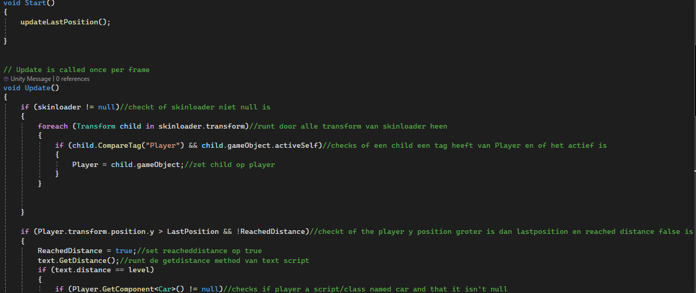
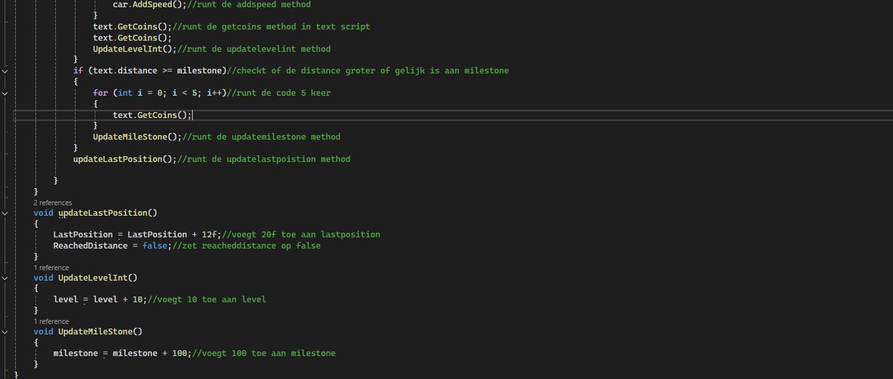

week 1 loopt van 30/09/2024 tot 04/10/2024
in deze week zijn we begonnen met het project en hebben wij ideeën bedacht en zijn we uit eindelijk uit gekomen op ons idee.
Het idee was om een soort van sub way surfers temaken met een stijl van hotline maimi.
en hier hebben we onze UX(user experience) document.Week 2 loopt van 07/10/20204 tot 11/10/2024
wij hebben het project aangemaakt en hebben al een goede voortgang gemaakt met ons project en hebben nu ook een prototype/release van ons spel.
Week 3 loopt van 14/10/20024 tot 18/10/2024
in deze week heb ik de achievements van spel gemaakt en code voor toegevoegd.
en heb er voor gezorgd dat de aftstand dat je aflegd wordt ogeslachen en werkt.
heb er ook voor gezorgd dat de crystals van ons spel dat je krijgt met de afstand dat je aflegd dat het werkt.
Week 4 loopt van 21/10/2024 tot 25/10/2024
in deze week hebben we de laaste paar dingen aan ons project aangepast en bugs dat wij nog hadden gefixt.
wat ik heb gedaan met dit project is het UI programmeren het design is door een team genoot gedaan en heb de check voor distance gemaakt
hier onder nog wat code van een script dat ik heb gemaakt
 